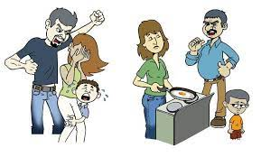

Causas de la violencia intrafamiliar Los factores que originan la violencia intrafamiliar pueden ser muy variados. La intolerancia es uno de esos factores o causas. Cuando las personas no son educadas para tolerar, para aceptar, terminan volcándose violentamente contra otras. De igual forma la falta de control de los impulsos es otras de las causas. Cuando no se ha tenido un buen desarrollo de vínculos afectivos, las personas no son capaces de establecerlos, por lo tanto adoptan conductas agresivas. Otra de las causas es la incapacidad de resolver problemas. Hay causas como el alcohol, el consumo de drogas. Todas estas causas pueden evitarse o corregirse con la ayuda de un psicólogo. Consecuencias de la violencia intrafamiliar La violencia intrafamiliar es un problema que generar graves consecuencias. Las víctimas de cualquiera de los tipos de violencia intrafamiliar sufren daños físicos, emocionales y psíquicos. Se hacen incapaces de establecer o mantener relaciones afectivas. Sufren problemas de autoestima. La violencia intrafamiliar puede incluso generar la muerte. Es por ello que ante las señales de violencia intrafamiliar hay que acudir por ayuda de expertos. Se hace necesario que los agresores puedan aprender a gestionar sus emociones, controlar sus impulsos y superar la intolerancia a tiempo. Las víctimas también necesitan ayuda, para superar las consecuencias y desarrollar una vida plena, mediante la superación de los estragos originados por la violencia intrafamiliar.
Los factores que originan la violencia intrafamiliar pueden ser muy variados. La intolerancia es uno de esos factores o causas. Cuando las personas no son educadas para tolerar, para aceptar, terminan volcándose violentamente contra otras. De igual forma la falta de control de los impulsos es otras de las causas. Cuando no se ha tenido un buen desarrollo de vínculos afectivos, las personas no son capaces de establecerlos, por lo tanto adoptan conductas agresivas. Otra de las causas es la incapacidad de resolver problemas. Hay causas como el alcohol, el consumo de drogas. Todas estas causas pueden evitarse o corregirse con la ayuda de un psicólogo.
